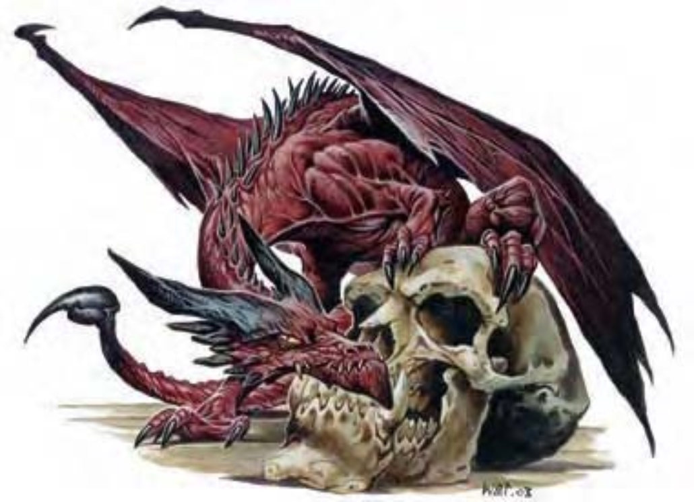

他们像是红龙的微缩模型，比家鼠还小上一些，体色为红褐色而非深红。他们有美丽的鳞片及尖角利牙。尾长为身长两倍，长满倒钩，甩动灵活。
伪龙是龙族中超小型又爱玩的成员。伪龙身长1英尺，尾长2英尺，重约7磅。
伪龙可用心灵感应沟通，但也可发出动物的声音，像是高兴时刺耳的咕噜声、不爽或吃惊时的嘶嘶声、乞求东西时的啾啾声及生气时的咆哮声。
伪龙的啮咬含毒，但主要使用尾针螫刺。
毒素 (特异)：每次造成伤害后，伪龙就会注入毒素 (强韧检定的DC=14)。初始伤害为睡眠1分钟，后续伤害为睡眠1d3小时。豁免检定DC的调整值与体质调整值相同，包含+2种族加值。
替代视觉 (特异)：伪龙可以不靠视觉就确知60英尺内的生物位置，他多半使用听觉与嗅觉，但也会留心震动或其他环境因子。伪龙无法真正见到的对手仍然具有完全隐蔽。
心灵感应 (超自然)：伪龙能够透过心灵感应与周遭60英尺范围内任何通晓通用语或木族语的生物沟通。
技能：伪龙具有变色能力，进行「躲藏」检定时具有+4种族加值。*在森林或长满草的区域则为+8。
伪龙很少会将人形生物视为伙伴。他会偷偷跟踪伙伴候选者数日，读取他的心思，审查他的言行。如果发现候选者前途看好，伪龙就会现身表示可能成为他的伙伴，再观察其他的反应。如果候选者看起来很开心，并承诺会好好对待，伪龙才会接受他。反之则掉头飞走。
伪龙的个性被形容成像猫一样。这种生物常常看起来傲慢自大、对人颐指气使，不太愿意主动帮忙。但在吃饱喝足、梳装打理，且受到许多关爱后，他也很愿意效劳。他的伙伴必须把他当作生命中第一要角来宠爱。如果伪龙被虐待或侮辱，他会离开――或至少恶作剧进行报复。伪龙特别讨厌残酷，因此绝对不会服侍残酷的主人。
伪龙蛋可卖到10000金币，幼龙20000金币。伪龙生命期约10至15年。就像龙一样，他们会受明耀闪亮的物体吸引。
| 生命骰 | 2d12+2 (15HP) |
| 先攻 | +2 |
| 速度 | 15英尺 (3格)、飞行60英尺 (良好) |
| 防御等级 | 18 (+2体型、+2敏捷、+4天生)、接触14、措手不及16 |
| 基本攻击/擒抱 | +2 / -8 |
| 攻击 | 螫刺+4近战 (1d3-2附加毒素) |
| 全力攻击 | 螫刺+4近战 (1d3-2附加毒素) 及啮咬-1近战 (1) |
| 占据/触及 | 2.5英尺 / 0英尺 (使用尾巴时5英尺) |
| 特殊攻击 | 毒素 |
| 特殊能力 | 盲感60英尺、黑暗视觉60英尺、对「睡眠术」及麻痹免疫、昏暗视觉、法术抗力19、心灵感应60英尺 |
| 豁免 | 强韧+4、反射+5、意志+4 |
| 属性 | 力量6、敏捷15、体质13、智力10、感知12、魅力10 |
| 技能 | 交涉+2、躲藏+20*、聆听+9、搜索+6、察言观色+7、侦察+9、生存+1 (追踪+3) |
| 专长 | 警觉、武器娴熟 |
| 环境 | 温带森林 |
| 组织 | 单独、成双或数尾 (3-5) |
| 宝藏 | 无 |
| 阵营 | 总是中立善良 |
| 进化 | 3-4HD (超小型) |
| 等级修正值 | +3 |